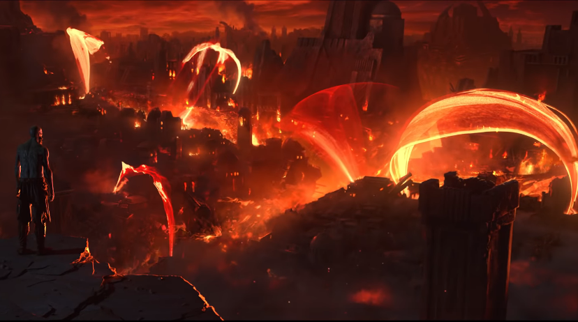

Почему у мира Рунтерры такое название? Почему Демасийцы запрещают магию? Почему некогда великая Шурима сейчас лежит в руинах?
Испокон веков мир пронизывала магия, она текла сквозь камни, реки и даже сам воздух. Населяющие мир существа со временем научились пользоваться этой силой.
К сожалению, по большей части, мир населяли люди, а люди очень кровожадные существа. Шли века и начали образовываться государства и империи. По большей части, мир был разделен на 2 континента: Валоран на севере и Шурима на юге.
На Валоране существовало несколько крупных государств, чьи названия так и не сохранились до наших дней, в то время, как на Шуриме правила одноименная империя, которая вела постоянные войны на своих границах.
За многие века конфликтов, государства начали использовать магов, которые обрушивали могучие заклятия на толпы врагов, но с течением времени им было мало – правители и маги хотели больше разрушительной мощи. Некоторые талантливые волшебники чувствовали, что сила этого мира имеет источник… И они начали искать.
Годы поисков принесли успех и были обнаружены, так называемые, Мировые руны - артефакты, которые обладали невиданной мощью. С помощью Мировых рун можно было сметать с лица планеты целые города. И в момент, когда у противоборствующих сторон было по одной Мировой руне, случилась первая Руническая война, которая принесла огромные разрушения. Кроме того, после того как война завершилась, сама планета начала вести себя очень странно: мощные ураганы, смерчи, землетрясения… как будто хотели завершить то, что не смогли сделать Мировые руны. Именно из-за этих рун, все земли этого мира стали прозывать "Рунтеррой", что значит - земля рун.
Спустя столетия после первой Рунической войны, ситуация на Валоране начала стабилизироваться и главенствующими силами на континенте стали предки современных Демасийцев и Ноксианцев. Но в момент, когда память о предыдущей Рунической войне притупилась, эти два непримиримых врага опять прибегли к запретным силам Мировых рун.
Именно на этом моменте начинается история нашего первого чемпиона - Райза или как его еще называют: Рунический маг.
Становление Райза как персонажа как раз приходится на Руническую войну между современными Демасийцами и Ноксианцами. Райз и его наставник Титус состояли в древнем магическом ордене, который занимался поиском и хранением магических артефактов Рунтерры. Многие маги, и Райз с Титусом были не исключением, видели ужасное последствие использование Мировых рун. Они понимали, что дальнейшее использование может привести к гибели всего живого. И с целью сохранения целостности мира учитель и ученик ездили по множествам народам Рунтерры, призывая их к здравомыслию и спокойствию. Однажды они смогли организовать переговоры между двумя армиями прямо перед грандиозной битвой в надежде на её предотвращение. Но Титус не смог придти к соглашению в конфликте и в спешке он со своим учеником покинул будущее поле боя. В этот день они на своих глазах увидели мощь мировых рун. Разрушения были просто колоссальными. А свидетели этого ужаса описывали увиденное следующим образом:
"Земля ушла у них из под ног, казалось, сами скалы стонут, а небо сжимается, получив смертельный удар. В долине, где стояли армии, царило полное безумие. Разрушения таких масштабов противоречили законам природы. И люди, и здания, все исчезло. Только океан, находившийся прежде в сутках пути на восток, устремился в образовавшуюся пустоту…" 
Стоя на коленях и не веря своим глазам, Райз вглядывался в этот разрыв тканей мироздания. Ничто не уцелело, даже родная деревушка молодого мага была просто уничтожена. Вскоре в войну втягивались новые армии и народы. И Титус был совершенно уверен что использование мировых рун необходимо остановить. Угроза уничтожения всего сущего отрезвляла многие умы, но никто не хотел отдавать руны первым.
Время шло, а прогресс стоял на месте, и учитель Райза стал отстраняться от своего ученика: избегать его и посылать по пустякам в отдаленные регионы. Но в какой-то момент Райз решил напрямую узнать у своего учителя, в чем дело.
Оказалось, что Титус сумел завладеть сразу двумя мировыми рунами. Невероятная сила овладела рассудком великого мага и он решил что должен остановить конфликты силой, по сути, уподобляясь тем, кого он пытается остановить. Видя, что учителя уже не вразумить, Райз убивает своего учителя в момент, когда тот потерял бдительность. Это было тяжкое решение, и оно оставило сильный отпечаток на душе Райза.
В ходе размышления, наш юный маг понимает, что если по миру гуляет хотя бы одна мировая руна, то Рунтерра находится в огромной опасности, ведь если эта сила смогла свести с ума такого великого мага как Титус, то что же говорить про остальных. Вскоре война закончилась, и Райзу стало ясно его предназначение. Рунтерра находится в смертельной опасности до тех пор, пока в мире есть хотя бы одна мировая руна без присмотра. Осознание этого стало его бременем, которое Райз вынужден был нести в одиночку, ведь только он мог противостоять зову силы. Райз посвятил всю свою жизнь поиску и запечатыванию мировых рун.
Другие истории связанные с Райзом и силе мировых рун вы можете прочитать во вкладке "Райз"
Спустя многие века, Рунические войны были частью ужасных историй и большинство населения Рунтерры понимали опасность их использования. Демасия, например, настолько серьезно отнеслась к вопросу магии, что вся магия без исключения оказалась под запретом. А волшебники внутри страны считаются опасными преступниками. Любые проявления магического дара могут оказаться веской причиной заточения в тюрьме. Другие же продолжили активно использовать магию, но уже без силы мировых рун. А Райз до сих пор следит за аномалиями и продолжает свой путь по спасению мира.